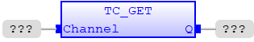
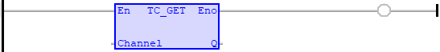

System Command
Reads a single char from channel source.
|
Channel : INT; |
Channel buffer used. |
|
Q : DINT; |
ASCII value of the character being read. |
TC_GET reads a single char from channel source. It waits for the arrival of a single character on the serial. The ASCII value of the character is assigned to the output. The user program will wait until a character is available.
TC_GET ( Channel (*INT*) );

